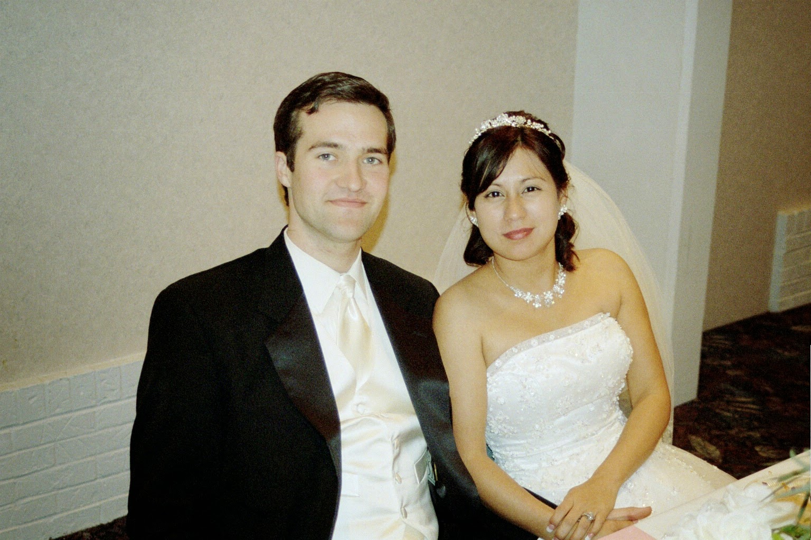
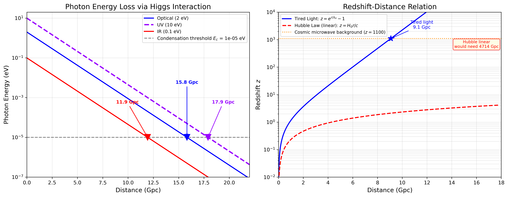
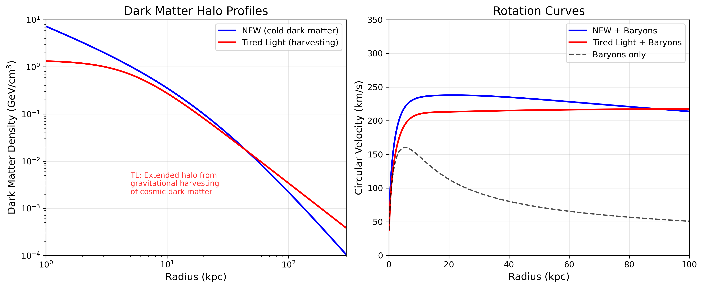
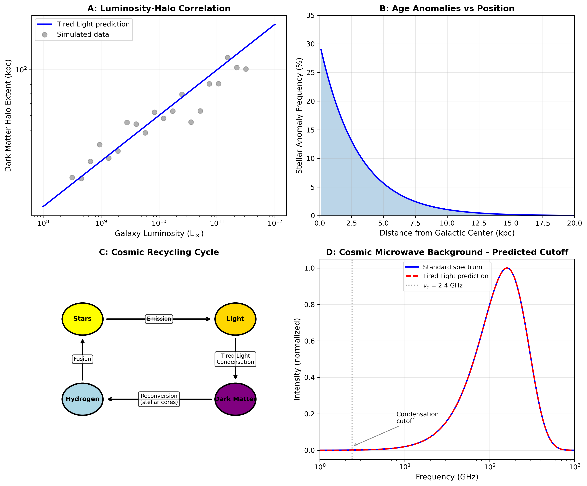
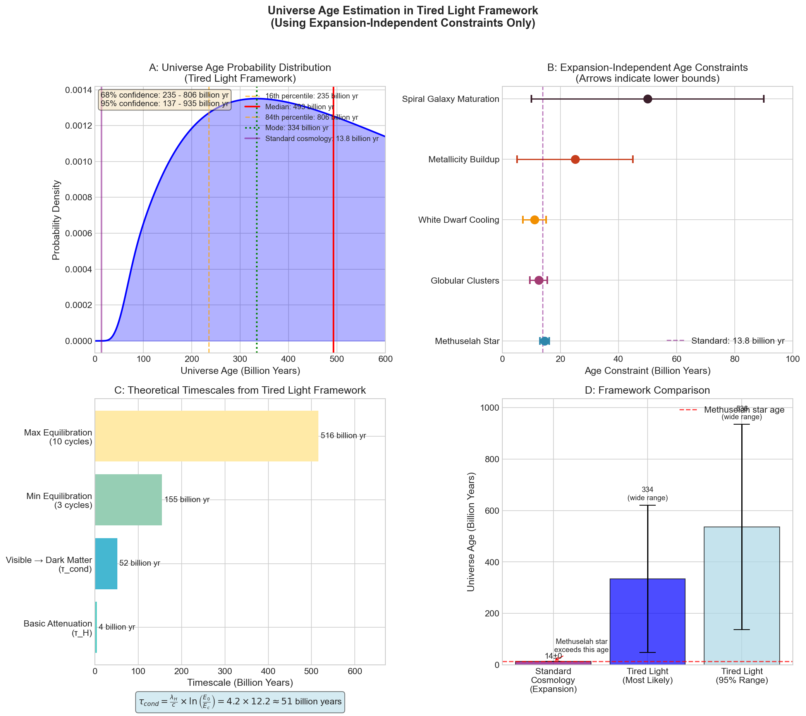
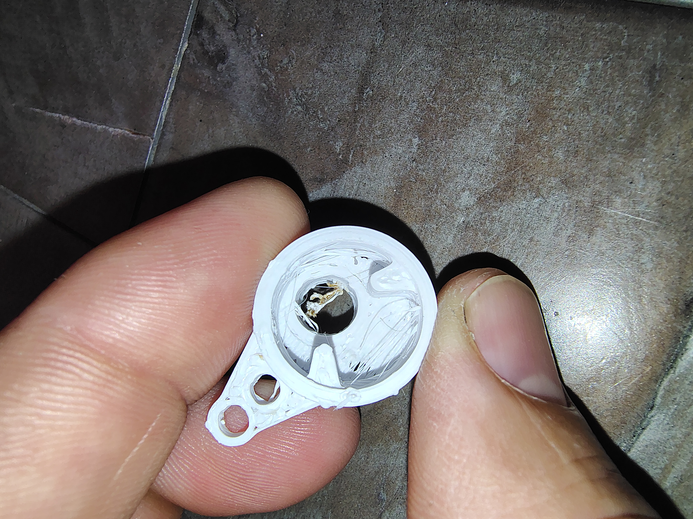

Joseph Wimsatt
Technician • Independent Researcher • Inventor
Evaluate and repair. First-principles thinking applied to industrial equipment, electronics, and cosmological theory.
About

I'm an independent researcher and technician in the Texas Hill Country. I focus on cosmological theory, electronics, and industrial repair.
I evaluate and repair equipment from the ground up. I also design PCBs and manufacture custom replacement parts.
I'm a husband and father. I grow native plants and teach my kids by doing. My faith in Jehovah is the foundation of my life.
A man of many nationalities, rooted in one place.
Books
Aeternus Vitalis — Book One
Left for dead in the Peruvian rainforest, a geology professor wakes three days later — healed, forty years younger, and carrying the greatest secret in human history. Written as his memoir three hundred years on. Fiction built on real science: piezoelectric quartz, ancient water engines, and the four-note mathematics of a heartbeat.
Cherubs of Honor
Where my mind has gone — a science fiction story of shared consciousness across the galaxy: a man asleep on Earth wakes behind the eyes of a special operations commander in the middle of a rescue that is going wrong.
Research
Tired Light Theory: A Unified Framework
A Unified Framework for Dark Matter, Stellar Anomalies, and Cosmic Structure via Higgs Field Interaction
Photons lose energy through interaction with the Higgs field as they travel across cosmological distances — a mechanism that explains redshift without requiring universal expansion. This framework makes specific, testable predictions:
- An effective Hubble parameter derived from Higgs coupling
- A predicted cosmic microwave background temperature of ~2.68 K (measured: 2.725 K)
- Structure in the cosmic microwave background temperature fluctuation spectrum
- A unified account of dark matter phenomena, stellar anomalies, and large-scale cosmic structure
Key Results




Adjacent Research Interests
- Plasma electromagnetics and novel electromagnetic shielding (plasma-shell concept)
- Nanoscale device architecture — electret charge, quantum tunneling through metal-insulator-metal layers, Brownian motion
- Higgs field physics beyond particle physics applications
Projects

Stepper Motor Controller PCB
Custom KiCad design featuring TMC2209 driver, 4PDT relay auto-sense circuit for unknown coil resistance measurement, 4S 18650 battery power, and dual Arduino Nano/Seeeduino XIAO header footprint. Two-layer FR4, ~100×80mm.

3D-Printed Carburetor Parts
Choke control knob and bracket with brass heat-set insert and split-clamp collar design. ABS+ material. Designed in FreeCAD, currently in production and available for purchase.

Claude Automation Tooling
Custom-built session management and monitoring tools: cron-based resume scripts, terminal dashboard for research pipeline monitoring, and a curses-based API monitoring dashboard. All Python standard library.

Nanoscale Device Research
Experimental concept combining electret charge, quantum tunneling through metal-insulator-metal layers, and Brownian motion. Includes homebrew electroplating test protocol — a hands-on science project with my kids.
Repair & Service
I evaluate and repair.
I change oil, do tune ups, and can turn rotor slip rings and end bell bearings.
I can rebuild carburetors, and fix control boards.
Shop

Choke Control Knob & Bracket Assembly
3D-printed replacement for carburetor choke control. ABS+ construction with brass heat-set insert (reuses OEM insert) and split-clamp collar design. Includes detailed installation documentation.
Designed as a direct replacement — no modification required.
Inquire